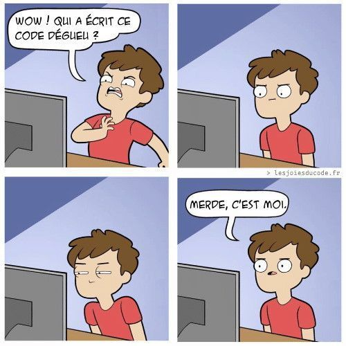

Portabilité
Présentation des principes et des techniques permettant de rendre un projet exécutable sur différents environnements.
Dérouler les slides ci-dessous ou cliquer ici pour afficher les slides en plein écran.
Introduction : la notion de portabilité

Dans les chapitres précédents, nous avons vu un ensemble de bonnes pratiques qui permettent de considérablement améliorer la qualité d’un projet : rendre le code plus lisible, adopter une structure du projet normalisée et évolutive et versionner proprement son code sur un dépôt GitHub .
Une fois ces bonnes pratiques appliquées à notre projet, ce dernier apparaît largement partageable. Du moins en théorie, car la pratique est souvent plus compliquée : il y a fort à parier que si vous essayez d’exécuter votre projet sur un autre environnement d’exécution (un autre ordinateur, un serveur, etc.), les choses ne se passent pas du tout comme attendu. Cela signifie que qu’en l’état, le projet n’est pas portable : il n’est pas possible, sans modifications coûteuses, de l’exécuter dans un environnement différent de celui dans lequel il a été développé.
La raison principale est qu’un code ne vit pas dans une bulle isolée, il contient en général de nombreuses adhérences, plus ou moins visibles, au langage et à l’environnement dans lesquels il a été développé :
- des dépendances
Pythonpropres au langage du projet. C’est l’environnement des packages nécessaires à exécuter le code ; - des dépendances dans d’autres langages nécessaires au fonctionnement de certaines librairies
Python. En effet,Pythonest un langage de haut niveau et certains packages nécessitent des librairies bas-niveau pour être efficaces. Par exemple,NumPyest écrit enCet nécessite donc un compilateurCetPytorcha quant à lui besoin deC++; - des dépendances à des librairies systèmes nécessaires pour installer certains packages qui ne seront pas les mêmes selon le système d’exploitation utilisé et certains paramètres matériels (par exemple, selon que Windows utilise une version 32 ou 64 bits). Par exemple, les librairies de manipulation ou de visualisation de données spatiales (
GeoPandas,Folium) reposent sur des librairies systèmesGDALqui sont propres à chaque système d’exploitation1.
Le premier problème peut être géré relativement facilement en adoptant une structure de projet (chapitre précédent) avec un fichier requirements.txt bien structuré et versionné. Les deux autres nécessitent en général des outils plus avancés.
Nous allons progresser dans la démarche de reproductibilité en visant un projet portable, c’est-à-dire qui peut être exécuté dans un environnement différent de celui dans lequel il a été développé. Nous allons avoir besoin de nouveaux outils qui seront, chacun, des avancées sur l’échelle de la reproductibilité:
- Les environnements virtuels ;
- Les conteneurs.
Ces outils vont nous permettre de normaliser l’environnement afin de produire un projet portable. Cette étape est primordiale lorsque l’on se préoccupe de la mise en production d’un projet, car elle assure une transition relativement indolore entre l’environnement de développement et celui de production.

Le choix de la méthode à privilégier dépend d’un arbitrage temps-opportunité. Tous les projets n’ont pas vocation à être mis à disposition par le biais de conteneurs. Néanmoins, l’intérêt d’adopter une démarche de bonnes pratiques est que si le projet gagne en ambition et que la conteneurisation s’avère adéquate, celle-ci sera peu coûteuse à mettre en oeuvre.
Les environnements virtuels
Introduction
Pour illustrer l’importance de travailler avec des environnements virtuels, mettons-nous à la place d’un.e aspirant.e data scientist qui commencerait ses premiers projets.
Selon toute vraisemblance, on va commencer par installer une distribution de Python — souvent, via Anaconda — sur son poste et commencer à développer, projet après projet. S’il est nécessaire d’installer une librairie supplémentaire, on le fera sans trop se poser de question. Puis, on passera au projet suivant en adoptant la même démarche. Et ainsi de suite.
Cette démarche naturelle présentera l’avantage de permettre d’aller vite dans les expérimentations. Néanmoins, elle deviendra problématique s’il devient nécessaire de partager son projet, ou de reprendre celui-ci dans le futur.
Dans cette approche, les différents packages qu’on va être amené à utiliser vont être installés au même endroit. Ceci peut apparaître secondaire, après tout nous utilisons Python pour sa simplicité d’usage qui ne nécessite pas de passer des heures à se poser des questions avant d’écrire la moindre ligne de code, mais cela va finir par nous poser plusieurs problèmes :
- conflits de version : une application A peut dépendre de la version 1 d’un package là où une application B peut dépendre de la version 2 de ce même package. Ces versions d’un même package peuvent avoir des incompatibilités2. Une seule application peut donc fonctionner dans cette configuration ;
- version de
Pythonfixe — on ne peut avoir qu’une seule installation par système — là où on voudrait pouvoir avoir des versions différentes selon le projet ; - reproductiblité limitée : difficile de dire quel projet repose sur tel package, dans la mesure où ceux-ci s’accumulent en un même endroit au fil des projets ;
- portabilité limitée : conséquence du point précédent, il est difficile de fixer dans un fichier les dépendances spécifiques à un projet, et exclusivement celles-ci.
Les environnements virtuels constituent une solution à ces différents problèmes.
Fonctionnement
Le concept d’environnement virtuel est techniquement très simple. On peut lui donner la définition suivante pour Python :
“dossier auto-suffisant qui contient une installation de
Pythonpour une version particulière dePythonainsi que des packages additionnels et qui est isolé des autres environnements existants.”
On peut donc simplement voir les environnements virtuels comme un moyen de faire cohabiter sur un même système différentes installations de Python avec chacune leur propre liste de packages installés et leurs versions. Développer dans des environnements virtuels vierges à chaque début de projet est une très bonne pratique pour accroître la reproductibilité des analyses.
Implémentations
Il existe différentes implémentations des environnements virtuels en Python, dont chacune ont leurs spécificités et leur communauté d’utilisateurs :
- L’implémentation standard en
Pythonestvenv. condapropose une implémentation plus complète.
En pratique pour les utilisateurs, ces implémentations sont relativement proches. La différence conceptuelle majeure est que conda est à la fois un package manager (comme pip) et un gestionnaire d’environnements virtuels (comme venv).
Pendant longtemps, conda en tant que package manager s’est avéré très pratique en data science, dans la mesure où il gérait non seulement les dépendances Python mais aussi dans d’autres langages, comme des dépendances C, très utilisées par les principales librairies de data science et dont l’installation peut être complexe sur certains systèmes d’exploitation. Néanmoins, depuis quelques années, l’installation de packages par pip se fait de plus en plus par le biais de wheels qui sont des versions pré-compilées des librairies systèmes, propres à chaque configuration système.
pip et conda
L’autre différence majeure avec pip est que Conda utilise une méthode plus avancée — et donc également plus coûteuse en temps — de résolution des dépendances.
En effet, différents packages peuvent spécifier différentes versions d’un même package dont ils dépendent tous les deux, ce qui provoque un conflit de version. Conda va par défaut appliquer un algorithme qui vise à gérer au mieux ces conflits, là où pip va choisir une approche plus minimaliste3.
pip+venv présente l’avantage de la simplicité, conda de la fiabilité. Selon les projets, on privilégiera l’un ou l’autre. Néanmoins, si le projet est amené à fonctionner de manière isolée dans un conteneur, venv suffira amplement car l’isolation sera fournie par le conteneur comme nous le verrons ultérieurement.
On lit souvent, notamment chez les afficionados de que la gestion des environnements en Python est chaotique. C’était vrai au début des années 2010 mais c’est quelques peu exagéré aujourd’hui.
La qualité supérieure des outils pour la gestion des dépendances ne saute pas aux yeux: renv est très intéressant mais ne permet pas de définir la version de :
R version: renv tracks, but doesn’t help with, the version of R used with the packge. renv can’t easily help with this because it’s run inside of R, but you might find tools like rig helpful, as they make it easier to switch between multiple version of R on one computer.
C’est, en fait, le problème principal des outils pour la reproductibilité. Pour les utiliser, il faut souvent se trouver dans une session , avec ses spécificités. Les outils qui s’utilisent pas le biais de la ligne de commande offrent une robustesse plus importante. venv est certes dépendant de la version de utilisée lors de la création de l’environnement mais le fait de passer par le terminal permet de choisir la version de qui servira à créer l’environnement. Quant à conda, la version de est définie dans le environment.yml ce qui donne une grande liberté.
Puisqu’il n’y a pas de raison absolue d’imposer pip+venv ou conda, nous recommandons le pragmatisme. Personnellement, nous utilisons plutôt venv car nous travaillons principalement dans des microservices basés sur des conteneurs et non sur des postes personnels, ce qui est l’approche moderne dans le monde de la data science. Nous présentons néanmoins les deux approches par la suite. L’application fil rouge propose les deux approches, à vous de choisir celle que vous désirez privilégier.
Guide pratique d’utilisation d’un environnement virtuel
Guide pratique d’utilisation d’un environnement virtuel
Installation
venv est un module inclus par défaut dans Python, ce qui le rend facilement accessible pour la gestion d’environnements virtuels.
Les instructions pour utiliser venv, l’outil de création d’environnements virtuels intégré à Python, sont détaillées dans la documentation officielle de Python.

Les instructions à suivre pour installer conda sont détaillées dans la documentation officielle. conda seul étant peu utile en pratique, il est généralement installé dans le cadre de distributions. Les deux plus populaires sont :
Miniconda: une distribution minimaliste contenantconda,Pythonainsi qu’un petit nombre de packages techniques très utiles ;Anaconda: une distribution assez volumineuse contenantconda,Python, d’autres logiciels (R,Spyder, etc.) ainsi qu’un ensemble de packages utiles pour la data science (SciPy,NumPy, etc.).

Le choix de la distribution importe assez peu en pratique, dans la mesure où nous allons de toute manière utiliser des environnements virtuels vierges pour développer nos projets.
Créer un environnement
Pour commencer à utiliser venv, commençons par créer un environnement vierge, nommé dev. Pour créer un environnement virtuel, cela se fait en ligne de commande par le biais de Python. Cela signifie que la version de Python utilisée par cet environnement sera celle utilisée lors de la création de celui-ci.
terminal
1python -m venv dev- 1
-
Sur un système
Windows, ce serapython.exe -m venv dev
Cette commande crée un dossier nommé dev/ contenant une installation Python isolée.
Exemple sur un système Linux

LinuxCelle-ci est de la version de Python enregistrée par défaut dans le PATH, en l’occurrence Python 3.11. Pour créer un environnement virtuel avec une autre version de Python, il faudra définir le chemin de manière formelle, par exemple:
terminal
/chemin_local/python3.8 -m venv dev-oldPour commencer à utiliser conda, commençons par créer un environnement vierge, nommé dev, en spécifiant la version de Python que l’on souhaite installer pour notre projet.
terminal
conda create -n dev python=3.9.7Retrieving notices: ...working... done
Channels:
- conda-forge
Platform: linux-64
Collecting package metadata (repodata.json): done
Solving environment: done
## Package Plan ##
environment location: /opt/mamba/envs/dev
added / updated specs:
- python=3.9.7
The following packages will be downloaded:
...
The following NEW packages will be INSTALLED:
...
Proceed ([y]/n)? y
Downloading and Extracting Packages
...Comme indiqué dans les logs, Conda a créé notre environnement et nous indique son emplacement sur le filesystem. En réalité, l’environnement n’est jamais vraiment vierge : Conda nous demande — et il faut répondre oui en tapant y — d’installer un certain nombre de packages, qui sont ceux qui viennent avec la distribution Miniconda.
On peut vérifier que l’environnement a bien été créé en listant les environnements installés sur le système.
terminal
conda info --envs# conda environments:
#
base * /opt/mamba
dev /opt/mamba/envs/devActiver un environnement
Activer un environnement
Comme plusieurs environnements peuvent coexister sur un même système, il faut dire à notre gestionnaire d’environnement d’activer celui-ci. Dès lors, ce sera celui-ci qui sera utilisé implicitement lorsqu’on utilisera python, pip, etc. dans la ligne de commande active4.
terminal
source dev/bin/activatevenv active l’environnement virtuel dev, indiqué par le changement du nom de l’environnement qui apparaît au début de la ligne de commande dans le terminal. Une fois activé, dev devient temporairement notre environnement par défaut pour les opérations Python. Pour confirmer cela, nous pouvons utiliser la commande which pour déterminer l’emplacement de l’interpréteur Python qui sera utilisé pour exécuter des scripts comme python mon-script.py.
terminal
which python/home/onyxia/work/dev/bin/pythonterminal
conda activate devConda nous indique que l’on travaille à partir de maintenant dans l’environnement dev en indiquant son nom entre parenthèses au début de la ligne de commandes. Autrement dit, dev devient pour un temps notre environnement par défaut. Pour s’en assurer, vérifions avec la commande which l’emplacement de l’interpréteur Python qui sera utilisé si on lance une commande du type python mon-script.py.
terminal
which python/opt/mamba/envs/dev/bin/pythonOn travaille bien dans l’environnement attendu : l’interpréteur qui se lance n’est pas celui du système global, mais bien celui spécifique à notre environnement virtuel.
Lister les packages installés
Une fois l’environnement activé, on peut lister les packages installés et leur version. Cela confirme qu’un certain nombre de packages sont installés par défaut lors de la création d’un environnement virtuel.
On part d’un environnement vraiment réduit à l’os:
terminal
pip listPackage Version
---------- -------
pip 23.3.2
setuptools 69.0.3
wheel 0.42.0L’environnement est assez minimaliste, quoique plus garni que lors de la création d’un environnement virtuel par venv
terminal
conda list# packages in environment at /opt/mamba/envs/dev:
#
# Name Version Build Channel
_libgcc_mutex 0.1 conda_forge conda-forge
_openmp_mutex 4.5 2_gnu conda-forge
ca-certificates 2023.11.17 hbcca054_0 conda-forge
...Pour se convaincre, on peut vérifier que Numpy est bien absent de notre environnement:
terminal
python -c "import numpy as np"Traceback (most recent call last):
File "<string>", line 1, in <module>
ModuleNotFoundError: No module named 'numpy'Installer un package
Notre environnement peut être enrichi, lorsque nécessaire, avec l’installation d’un package par le biais de la ligne de commande. La procédure est très similaire entre pip (pour les environnements venv) et conda.
pip et conda
Il est techniquement possible d’installer des packages par le biais de pip en étant situé dans un environnement virtuel conda5. Ce n’est pas un problème pour de l’expérimentation et ça permet de développer rapidement.
Néanmoins, dans un environnement de production c’est une pratique à éviter.
- Soit on initialise un environnement
condaautosuffisant avec unenv.yml(voir plus bas) ; - Soit on crée un environnement
venvet on fait exclusivement despip install.
terminal
pip install nom_du_packageterminal
conda install nom_du_packageLa différence est que là où pip install va installer un package à partir du répertoire PyPI, conda install va chercher le package sur les répertoires maintenus par les développeurs de Conda6.
Installons par exemple le package phare de machine learning scikit-learn.
terminal
pip install scikit-learnpip install scikit-learn
Collecting scikit-learn
Obtaining dependency information for scikit-learn from https://files.pythonhosted.org/packages/5b/be/208f17ce87a5e55094b0e8ffd55b06919ab9b56e7e4ce2a64cd9095ec5d2/scikit_learn-1.4.0-1-cp311-cp311-manylinux_2_17_x86_64.manylinux2014_x86_64.whl.metadata
Downloading scikit_learn-1.4.0-1-cp311-cp311-manylinux_2_17_x86_64.manylinux2014_x86_64.whl.metadata (11 kB)
Collecting numpy<2.0,>=1.19.5 (from scikit-learn)
Obtaining dependency information for numpy<2.0,>=1.19.5 from https://files.pythonhosted.org/packages/5a/62/007b63f916aca1d27f5fede933fda3315d931
...Les dépendances nécessaires (par exemple Numpy sont automatiquement installées). L’environnement s’enrichit donc:
terminal
pip listPackage Version
------------- -------
joblib 1.3.2
numpy 1.26.3
pip 23.2.1
scikit-learn 1.4.0
scipy 1.12.0
setuptools 65.5.0
threadpoolctl 3.2.0terminal
conda install scikit-learnVoir la sortie
Channels:
- conda-forge
Platform: linux-64
Collecting package metadata (repodata.json): done
Solving environment: done
## Package Plan ##
environment location: /opt/mamba/envs/dev
added / updated specs:
- scikit-learn
The following packages will be downloaded:
package | build
---------------------------|-----------------
joblib-1.3.2 | pyhd8ed1ab_0 216 KB conda-forge
libblas-3.9.0 |21_linux64_openblas 14 KB conda-forge
libcblas-3.9.0 |21_linux64_openblas 14 KB conda-forge
libgfortran-ng-13.2.0 | h69a702a_3 23 KB conda-forge
libgfortran5-13.2.0 | ha4646dd_3 1.4 MB conda-forge
liblapack-3.9.0 |21_linux64_openblas 14 KB conda-forge
libopenblas-0.3.26 |pthreads_h413a1c8_0 5.3 MB conda-forge
libstdcxx-ng-13.2.0 | h7e041cc_3 3.7 MB conda-forge
numpy-1.26.3 | py39h474f0d3_0 6.6 MB conda-forge
python_abi-3.9 | 4_cp39 6 KB conda-forge
scikit-learn-1.4.0 | py39ha22ef79_0 8.7 MB conda-forge
scipy-1.12.0 | py39h474f0d3_2 15.6 MB conda-forge
threadpoolctl-3.2.0 | pyha21a80b_0 20 KB conda-forge
------------------------------------------------------------
Total: 41.6 MB
The following NEW packages will be INSTALLED:
joblib conda-forge/noarch::joblib-1.3.2-pyhd8ed1ab_0
libblas conda-forge/linux-64::libblas-3.9.0-21_linux64_openblas
libcblas conda-forge/linux-64::libcblas-3.9.0-21_linux64_openblas
libgfortran-ng conda-forge/linux-64::libgfortran-ng-13.2.0-h69a702a_3
libgfortran5 conda-forge/linux-64::libgfortran5-13.2.0-ha4646dd_3
liblapack conda-forge/linux-64::liblapack-3.9.0-21_linux64_openblas
libopenblas conda-forge/linux-64::libopenblas-0.3.26-pthreads_h413a1c8_0
libstdcxx-ng conda-forge/linux-64::libstdcxx-ng-13.2.0-h7e041cc_3
numpy conda-forge/linux-64::numpy-1.26.3-py39h474f0d3_0
python_abi conda-forge/linux-64::python_abi-3.9-4_cp39
scikit-learn conda-forge/linux-64::scikit-learn-1.4.0-py39ha22ef79_0
scipy conda-forge/linux-64::scipy-1.12.0-py39h474f0d3_2
threadpoolctl conda-forge/noarch::threadpoolctl-3.2.0-pyha21a80b_0
Downloading and Extracting Packages:
Preparing transaction: done
Verifying transaction: done
Executing transaction: doneLà encore, conda nous demande d’installer d’autres packages, qui sont des dépendances de scikit-learn. Par exemple, la librairie de calcul scientifique NumPy.
(dev) $ conda list# packages in environment at /opt/mamba/envs/dev:
#
# Name Version Build Channel
_libgcc_mutex 0.1 conda_forge conda-forge
_openmp_mutex 4.5 2_gnu conda-forge
ca-certificates 2023.11.17 hbcca054_0 conda-forge
joblib 1.3.2 pyhd8ed1ab_0 conda-forge
ld_impl_linux-64 2.40 h41732ed_0 conda-forge
libblas 3.9.0 21_linux64_openblas conda-forge
libcblas 3.9.0 21_linux64_openblas conda-forge
libffi 3.4.2 h7f98852_5 conda-forge
libgcc-ng 13.2.0 h807b86a_3 conda-forge
libgfortran-ng 13.2.0 h69a702a_3 conda-forge
libgfortran5 13.2.0 ha4646dd_3 conda-forge
libgomp 13.2.0 h807b86a_3 conda-forge
liblapack 3.9.0 21_linux64_openblas conda-forge
libopenblas 0.3.26 pthreads_h413a1c8_0 conda-forge
libsqlite 3.44.2 h2797004_0 conda-forge
libstdcxx-ng 13.2.0 h7e041cc_3 conda-forge
libzlib 1.2.13 hd590300_5 conda-forge
ncurses 6.4 h59595ed_2 conda-forge
numpy 1.26.3 py39h474f0d3_0 conda-forge
openssl 3.2.0 hd590300_1 conda-forge
pip 23.3.2 pyhd8ed1ab_0 conda-forge
python 3.9.7 hf930737_3_cpython conda-forge
python_abi 3.9 4_cp39 conda-forge
readline 8.2 h8228510_1 conda-forge
scikit-learn 1.4.0 py39ha22ef79_0 conda-forge
scipy 1.12.0 py39h474f0d3_2 conda-forge
setuptools 69.0.3 pyhd8ed1ab_0 conda-forge
sqlite 3.44.2 h2c6b66d_0 conda-forge
threadpoolctl 3.2.0 pyha21a80b_0 conda-forge
tk 8.6.13 noxft_h4845f30_101 conda-forge
tzdata 2023d h0c530f3_0 conda-forge
wheel 0.42.0 pyhd8ed1ab_0 conda-forge
xz 5.2.6 h166bdaf_0 conda-forge
zlib 1.2.13 hd590300_5 conda-forgeExporter les spécifications de l’environnement
Développer à partir d’un environnement vierge est une bonne pratique de reproductibilité :
en partant d’une base minimale, on s’assure que seuls les packages effectivement nécessaires
au bon fonctionnement de notre application ont été installés au fur et à mesure du projet.
Cela rend également notre projet plus aisé à rendre portable.
On peut exporter les spécifications de l’environnement
dans un fichier spécial qui peut permettre de créer un nouvel environnement similaire
à celui ayant servi initialement.
terminal
pip freeze > requirements.txt
Voir le fichier requirements.txt généré
requirements.txt
joblib==1.3.2
numpy==1.26.3
scikit-learn==1.4.0
scipy==1.12.0
threadpoolctl==3.2.0terminal
conda env export > environment.ymlCe fichier est mis par convention à la racine du dépôt Git du projet.
Ainsi, les personnes souhaitant tester l’application peuvent recréer le même environnement Conda que celui qui a servi au développement via la commande suivante.
On refait la démarche précédente de création d’un
environnement vierge puis un pip install -r requirements.txt
terminal
python -m venv newenv
source newenv/bin/activateterminal
pip install -r requirements.txtCela se fait en une seule commande:
terminal
conda env create -f environment.ymlChanger d’environnement
Pour changer d’environnement virtuel, il suffit d’en activer un autre.
terminal
(myenv) $ deactivate
$ source anotherenv/bin/activate
(anotherenv) $ which python
/chemin/vers/anotherenv/bin/pythonPour quitter l’environnement virtuel actif, on utilise simplement la commande deactivate :
terminal
(anotherenv) $ deactivate
$Pour changer d’environnement, il suffit d’en activer un autre.
terminal
(dev) $ conda activate base
(base) $ which python
/opt/mamba/bin/pythonPour sortir de tout environnement conda, on utilise la commande conda deactivate :
terminal
(base) $ conda deactivate
$
Voir le fichier environment.yml généré
environment.yml
name: dev
channels:
- conda-forge
dependencies:
- _libgcc_mutex=0.1=conda_forge
- _openmp_mutex=4.5=2_gnu
- ca-certificates=2023.11.17=hbcca054_0
- joblib=1.3.2=pyhd8ed1aAide-mémoire
venv |
conda |
Principe |
|---|---|---|
python -m venv <env_name> |
conda create -n <env_name> python=<python_version> |
Création d’un environnement nommé <env_name> dont la version de Python est <python_version> |
conda info --envs |
Lister les environnements | |
source <env_name>/bin/activate |
conda activate <env_name> |
Utiliser l’environnement <env_name> pour la session du terminal |
pip list |
conda list |
Lister les packages dans l’environnement actif |
pip install <pkg> |
conda install <pkg> |
Installer le package <pkg> dans l’environnement actif |
pip freeze > requirements.txt |
conda env export > environment.yml |
Exporter les spécifications de l’environnement dans un fichier requirements.txt |
Limites
Développer dans des environnements virtuels est une bonne pratique, car cela accroît la portabilité d’une application. Néanmoins, il y a plusieurs limites à leur utilisation :
- les librairies système nécessaires à l’installation des packages ne sont pas gérées ;
- les environnements virtuels ne permettent pas toujours de gérer des projets faisant intervenir différents langages de programmation ;
- devoir installer
conda,Python, et les packages nécessaires à chaque changement d’environnement peut être assez long et pénible en pratique ; - dans un environnement de production, gérer des environnements virtuels différents pour chaque projet peut s’avérer rapidement complexe pour les administrateurs système.
La technologie des conteneurs permet de répondre à ces différents problèmes.
Les conteneurs 🐋

Introduction
Avec les environnements virtuels,
l’idée était de permettre à chaque utilisateur potentiel de notre projet d’installer sur son environnement d’exécution les packages nécessaires à la bonne exécution du projet.
Néanmoins, comme on l’a vu, cette approche ne garantit pas une reproductibilité parfaite et a l’inconvénient de demander beaucoup de gestion manuelle.
Changeons de perspective : au lieu de distribuer une recette permettant à l’utilisateur de recréer l’environnement nécessaire sur sa machine, ne pourrait-on pas directement distribuer à l’utilisateur une machine contenant l’environnement pré-configuré ?
Bien entendu, on ve pas configurer et envoyer des ordinateurs portables à tous les utilisateurs potentiels d’un projet.
On va donc essayer de livrer une version virtuelle
de notre ordinateur. Il existe deux approches principales pour cela:
- Les machines virtuelles. Cette approche n’est pas nouvelle. Elle consiste à recréer, sur un serveur, un environnement informatique complet (matériel et système d’exploitation) qui réplique le comportement d’un véritable ordinateur.
- Les conteneurs, une solution plus légère pour empaqueter un environnement informatique afin de répliquer le comportement d’une machine réelle.
Fonctionnement
Les machines virtuelles ont l’inconvénient d’être assez lourdes, et complexes à répliquer et distribuer. Pour pallier ces différentes limites, les conteneurs se sont imposés au cours de la dernière décennie. Toutes les infrastructures cloud modernes ont progressivement abandonné les machines virtuelles pour privilégier des conteneurs pour les raisons que nous allons évoquer ultérieurement.
Comme les machines virtuelles, les conteneurs permettent d’empaqueter complètement l’environnement (librairies systèmes, application, configuration) qui permet de faire tourner l’application.
Mais à l’inverse d’une machine virtuelle, le conteneur n’inclut pas de système d’exploitation propre, il utilise celui de la machine hôte qui l’exécute.
Cela signifie que si on désire reproduire le comportement d’une machine Windows, il n’est pas nécessaire d’avoir un gros serveur avec Windows. Il est tout à fait possible d’avoir un serveur Linux, ce qui est la norme, et de répliquer le comportement d’une machine Windows à l’intérieur. A l’inverse, cela peut permettre de tester des configurations Linux ou Mac sur un ordinateur Windows. C’est le rôle du logiciel de conteneurisation qui fera la traduction entre les instructions voulues par le software et le système d’exploitation du hardware.
La technologie des conteneurs permet ainsi de garantir une très forte reproductibilité tout en restant suffisamment légère pour permettre une distribution et un déploiement simple aux utilisateurs. En effet, l’adhérence forte entre un système d’exploitation et un logiciel dans l’approche des machines virtuelles rend plus complexe la montée en charge d’un serveur. Si plus d’utilisateurs commencent à utiliser l’application, il est nécessaire de s’assurer que des serveurs correspondant aux besoins de l’application (système d’exploitation, configurations techniques, etc.) soient disponibles. Avec les conteneurs, la montée en charge est plus simple puisque les restrictions matérielles sont moins fortes: ajouter un serveur Linux avec les logiciels adéquats peut être suffisant.

Du point de vue de l’utilisateur, la différence n’est pas toujours perceptible pour des besoins standards.
L’utilisateur accédera à son application par une application dédiée (un navigateur, un logiciel spécialisé…) et les calculs issus des opérations effectuées seront déportés sur les serveurs où est hébergée cette application. Néanmoins, pour l’organisation qui gère cette application, les conteneurs offriront plus de liberté et de flexibilité comme nous l’avons évoqué.
Docker , l’implémentation standard
Comme nous l’avons évoqué, le logiciel de conteneurisation fait office de couche tampon entre les applications et le système d’exploitation du serveur.
Comme pour les environnements virtuels, il existe différentes implémentations de la technologie des conteneurs. En pratique, l’implémentation offerte par Docker est devenue largement prédominante, au point qu’il est devenu courant d’utiliser de manière interchangeable les termes “conteneuriser” et “Dockeriser” une application. C’est donc cette implémentation que nous allons étudier et utiliser dans ce cours.
Installation et environnements bacs à sable
Docker est un logiciel qui peut s’installer sur différents système d’exploitation.
Les instructions sont détaillées dans la documentation officielle.
Il est nécessaire d’avoir des droits administrateurs sur son poste pour pouvoir faire cette installation.
Il est également recommandé d’avoir de l’espace disque libre car certaines images (concept sur lequel nous reviendrons), une fois décompressées et construites, peuvent être lourdes selon la richesse des librairies installées dessus. Elles peuvent rapidement prendre quelques Gigas d’espace disque.
Ceci est néanmoins à comparer à l’espace disque monstrueux que peut prendre un système d’exploitation complet (autour de 15GB pour Ubuntu ou Mac OS, 20GB par exemple pour Windows…). La distribution Linux la plus minimaliste (Alpine) ne fait que 3Mo compressée et 5Mo une fois décompressée.
Il existe également des environnements en ligne gratuits pouvant servir de bacs à sable s’il n’est pas possible pour vous d’installer Docker.
Play with Docker permet de tester en ligne Docker comme on pourrait le faire sur une installation personnelle. Néanmoins, ces services sont limités: la taille maximale des images décompressées est limitée à 2Go, les services connaissent des coupures en cas d’utilisation massive…
Comme nous le verrons ultérieurement, l’utilisation de Docker en interactif est pratique pour apprendre et expérimenter. Néanmoins, en pratique, on utilise principalement Docker par le biais de l’intégration continue via Github Actions ou Gitlab CI.
Principes

Un conteneur Docker est mis à disposition sous la forme d’une image, c’est à dire d’un fichier binaire qui contient l’environnement nécessaire à l’exécution de l’application. Celui-ci est mis à disposition de tous sous une forme compressée sur un dépôt d’images publiques (le plus connu est Dockerhub).
Avant de mettre à disposition une image, il est nécessaire de la construire (build).
Pour cela on utilise un Dockerfile, un fichier texte qui contient la recette — sous forme de commandes Linux — de construction de l’environnement.
Une fois l’image construite, il est possible de faire deux actions:
- La lancer (run) en local. Cela permet de tester l’application, éventuellement de la corriger en cas de mauvais fonctionnement. Le lancement de l’application permet de faire tourner l’image dans un environnement isolé qu’on appelle le conteneur (container), une instance vivante de l’image en quelques sortes7.
- La mettre à disposition sur un dépôt public pour permettre à d’autres (ou à soi-même) de la tester.
L’image va être uploadée (push) sur un dépôt (registry), public ou privé, depuis lequel les utilisateurs vont pouvoir télécharger l’image (pull).
Docker
Le répertoire d’images publiques le plus connu est DockerHub. Il s’agit d’un répertoire où n’importe qui peut proposer une image Docker, associée ou non à un projet disponible sur Github ou Gitlab. Il est possible de mettre à disposition de manière manuelle des images mais, comme nous le montrerons dans le chapitre sur la mise en production, il est beaucoup plus pratique d’utiliser des fonctionalités d’interaction automatique entre DockerHub et un dépôt GitHub.
Docker en pratique: un exemple
L’application fil rouge présente des exemples similaires sur notre cas d’usage qu’est une application visant à rendre public les résultats de notre modèle de machine learning.
Application
Afin de présenter l’utilisation de Docker en pratique, nous allons présenter les différentes étapes permettant de “dockeriser” une application web minimaliste construite avec le framework Python Flask8.
La structure de notre projet est la suivante.
├── myflaskapp
│ ├── Dockerfile
│ ├── hello-world.py
│ └── requirements.txtLe script hello-world.py contient le code d’une application minimaliste, qui affiche simplement “Hello, World!” sur une page web. Nous verrons dans l’application fil rouge comment construire une application interactive plus complète.
hello-world.py
from flask import Flask
app = Flask(__name__)
@app.route("/")
def hello_world():
return "<p>Hello, World!</p>"Pour faire tourner l’application, il nous faut donc à la fois Python et le package Flask. Il est donc nécessaire de contrôler l’environnement virtuel autour de Python ce qui va impliquer:
- Installer
Python; - Installer les packages nécessaires à l’exécution de notre code. En l’occurrence, on n’a besoin que de
Flask.
Si la version de Python utilisée par notre application nous importe peu, il est plus simple d’adopter un environnement virtuel venv que conda. Nous allons donc proposer d’utiliser ceci ce qui tombe bien car nous avons déjà notre requirements.txt qui prend la forme suivante:
requirements.txt
Flask==2.1.1Ces installations en deux temps (Python et packages nécessaires) doivent être spécifiées dans le Dockerfile (cf. section suivante).
Le Dockerfile
Pour faire un plat, il faut une recette. Pour faire une image image Docker, il faut un Dockerfile.
Ce fichier texte contient une série de commandes qui permettent de construire l’image. Ces fichiers peuvent être plus ou moins complexes selon l’application que l’on cherche à conteneuriser, mais leur structure est assez normalisée.
L’idée est de partir d’une couche de base (une distribution Linux minimaliste) et y ajouter des couches en fonction des besoins de notre application.
Pour illustrer cela, analysons ligne à ligne le Dockerfile nécessaire pour construire une image Docker de notre application Flask.
#| filename: Dockerfile
1FROM ubuntu:20.04
RUN apt-get update -y && \
2 apt-get install -y python3-pip python3-dev
3WORKDIR /app
4COPY requirements.txt /app/requirements.txt
RUN pip install -r requirements.txt
COPY . /app
5ENV FLASK_APP="hello-world.py"
6EXPOSE 5000
7CMD ["flask", "run", "--host=0.0.0.0"]- 1
-
FROM: spécifie l’image de base. Une imageDockerhérite toujours d’une image de base. Ici, on choisit l’imageUbuntuversion20.04, tout va donc se passer comme si l’on développait sur une machine virtuelle vierge ayant pour système d’exploitationUbuntu 20.04; - 2
-
RUN: lance une commande Linux. Ici, on met d’abord à jour la liste des packages téléchargeables viaapt, puis on installePythonainsi que des librairies système nécessaires au bon fonctionnement de notre application ; - 3
-
WORKDIR: spécifie le répertoire de travail de l’image. Ainsi, toutes les commandes suivantes seront exécutées depuis ce répertoire. C’est l’équivalentDockerde la commandecd(voir Linux 101) ; - 4
-
COPY: copie un fichier local sur l’imageDocker. Cela est lié à la manière dont fonctionneDocker. Pour ne pas polluer l’image de fichiers non nécessaires (qui affecteront de manière incidente sa configuration et le poids de celle-ci), par défaut, votre image ne contient pas de fichiers de votre projet. Si certains sont nécessaires pour construire l’image, il faut explicitement le dire àDocker. Ici, on copie d’abord le fichierrequirements.txtdu projet, qui spécifie les dépendancesPythonde notre application, puis on les installe avec une commandeRUN. La seconde instructionCOPYcopie le répertoire du projet sur l’image ; - 5
-
ENV: crée une variable d’environnement qui sera accessible à l’application dans le conteneur. Ici, on définit une variable d’environnement attendue parFlask, qui spécifie le nom du script permettant de lancer l’application ; - 6
-
EXPOSE: informeDockerque le conteneur “écoute” sur le port 5000, qui est le port par défaut utilisé par le serveur web deFlask. Ceci est lié à la nature du fonctionnement deFlaskqui lance un localhost sur un port donné, en l’occurrence le port 5000. ; - 7
-
CMD: spécifie la commande que doit exécuter le conteneur lors de son lancement. Il s’agit d’une liste, qui contient les différentes parties de la commande sous forme de chaînes de caractères. Ici, on lance la commandeflask runqui sait automatiquement quelle application lancer du fait de la commandeENVspécifiée précédemment. On ajoute l’option--host=0.0.0.0pour que ce soit l’application déployée sur le localhost (notre applicationFlask) qui soit mis à disposition de l’utilisateur final.
Dans l’idéal, on essaie de partir d’une couche la plus petite possible pour limiter la taille de l’image finalement obtenue. Il n’est en effet pas nécessaire d’utiliser une image disposant de si on n’utilise que du .
En général, les différents langages proposent des images de petite taille dans lequel un interpréteur est déjà installé et proprement configuré. Dans cette application, on aurait par exemple pu utiliser l’image python:3.9-slim-buster.
Avec la première commande RUN du Dockerfile, nous installons Python mais aussi des librairies système nécessaires au bon fonctionnement de l’application. Mais comment les avons-nous trouvées ?
Par essai et erreur. Lors de l’étape de build que l’on verra juste après, le moteur Docker va essayer de construire l’image selon les spécifications du Dockerfile, comme s’il partait d’un ordinateur vide contenant simplement Ubuntu 20.04. Si des librairies manquent, le processus de build devrait renvoyer une erreur, qui s’affichera dans les logs de l’application, affichés par défaut dans la console. Quand on a de la chance, les logs décrivent explicitement les librairies système manquantes. Mais souvent, les messages d’erreur ne sont pas très explicites, et il faut alors les copier dans un moteur de recherche bien connu pour trouver la réponse, souvent sur StackOverflow.
Il est recommandé, avant d’essayer de créer une image Docker, de passer par l’étape intermédiaire dans la démarche de reproductibilité qu’est la création d’un script shell (.sh). Cette approche graduelle est illustrée dans l’application fil rouge.
COPY
La recette présente dans le Dockerfile peut nécessiter l’utilisation de fichiers appartenant au dossier de travail. Pour que Docker les trouve dans son contexte, il est nécessaire d’introduire une commande COPY. C’est un petit peu comme pour la cuisine: pour utiliser un produit dans une recette, il faut le sortir du frigo (fichier local) et le mettre sur la table.
Nous n’avons ici vu que les commandes Docker les plus fréquentes, il en existe beaucoup d’autres en pratique. N’hésitez pas à consulter la documentation officielle pour comprendre leur utilisation.
Construction d’une image Docker
Pour construire une image à partir d’un Dockerfile, il suffit d’utiliser la commande docker build depuis la ligne de commande9. Il faut ensuite spécifier deux éléments importants :
- le build context. Il faut indiquer à
Dockerle chemin de notre projet, qui doit contenir leDockerfile. En pratique, il est plus simple de se mettre dans le dossier du projet via la commandecd, puis de passer.comme build context pour indiquer àDockerde build “d’ici” ; - le tag, c’est à dire le nom de l’image. Tant que l’on utilise
Dockeren local, le tag importe peu. On verra par la suite que la structure du tag a de l’importance lorsque l’on souhaite exporter ou importer une imageDockerà partir d’un dépôt distant.
Regardons ce qui se passe en pratique lorsque l’on essaie de construire notre image. Le tag de celle-ci est myflaskapp:
terminal
docker build -t myflaskapp .Sending build context to Docker daemon 47MB
Step 1/8 : FROM ubuntu:20.04
---> 825d55fb6340
Step 2/8 : RUN apt-get update && apt-get install -y python3-pip python3-dev
---> Running in 92b42d579cfa
...
done.
Removing intermediate container 92b42d579cfa
---> 8826d53e3c01
Step 3/8 : WORKDIR /app
---> Running in 153b32893c23
Removing intermediate container 153b32893c23
---> 7b4d22021986
Step 4/8 : COPY requirements.txt /app/requirements.txt
...
Successfully built 125bd8da70ff
Successfully tagged myflaskapp:latestLe moteur Docker essaie de construire notre image séquentiellement à partir des commandes spécifiées dans le Dockerfile. S’il rencontre une erreur, la procédure s’arrête, et il faut alors trouver la source du problème dans les logs et adapter le Dockerfile en conséquence.
Si tout se passe bien, Docker nous indique que le build a réussi et l’image est prête à être utilisée. On peut vérifier que l’image est bien disponible à l’aide de la commande docker images.
terminal
docker imagesREPOSITORY TAG IMAGE ID CREATED SIZE
myflaskapp latest 57d2f410a631 2 hours ago 433MBIntéressons nous un peu plus en détail aux logs de l’étape de build 👆️.
Entre les étapes, Docker affiche des suites de lettres et de chiffres un peu ésotériques, et nous parle de conteneurs intermédiaires. En fait, il faut voir une image Docker comme un empilement de couches (layers), qui sont elles-mêmes des images Docker. Quand on hérite d’une image avec l’instruction FROM, on spécifie donc à Docker la couche initiale, sur laquelle il va construire le reste de notre environnement. A chaque étape sa nouvelle couche, et à chaque couche son hash, un identifiant unique fait de lettres et de chiffres.
Cela peut ressembler à des détails techniques, mais c’est en fait extrêmement utile en pratique car cela permet à Docker de faire du caching. Lorsqu’on développe un Dockerfile, il est fréquent de devoir modifier ce dernier de nombreuses fois avant de trouver la bonne recette, et on aimerait bien ne pas avoir à rebuild l’environnement complet à chaque fois. Docker gère cela très bien : il cache chacune des couches intermédiaires10.
Par exemple, si l’on modifie la 5ème commande du Dockerfile, Docker va utiliser le cache pour ne pas avoir à recalculer les étapes précédentes, qui n’ont pas changé. Cela s’appelle l’“invalidation du cache” : dès lors qu’une étape du Dockerfile est modifiée, Docker va recalculer toutes les étapes suivantes, mais seulement celles-ci. Conséquence directe de cette observation : il faut toujours ordonner les étapes d’un Dockerfile de sorte à ce qui est le plus susceptible d’être souvent modifié soit à la fin du fichier, et inversement.
Pour illustrer cela, regardons ce qui se passe si l’on modifie le nom du script qui lance l’application, et donc la valeur de la variable d’environnement FLASK_APP dans le Dockerfile.
terminal
docker build . -t myflaskappSending build context to Docker daemon 4.096kB
Step 1/10 : FROM ubuntu:20.04
---> 825d55fb6340
Step 2/10 : ENV DEBIAN_FRONTEND=noninteractive
---> Using cache
---> ea1c7c083ac9
Step 3/10 : RUN apt-get update -y && apt-get install -y python3-pip python3-dev
---> Using cache
---> 078b8ac0e1cb
Step 4/10 : WORKDIR /app
---> Using cache
---> cd19632825b3
Step 5/10 : COPY requirements.txt /app/requirements.txt
---> Using cache
---> 271cd1686899
Step 6/10 : RUN pip install -r requirements.txt
---> Using cache
---> 3ea406fdf383
Step 7/10 : COPY . /app
---> 3ce5bd3a9572
Step 8/10 : ENV FLASK_APP="new.py"
---> Running in b378d16bb605
Removing intermediate container b378d16bb605
---> e1f50490287b
Step 9/10 : EXPOSE 5000
---> Running in ab53c461d3de
Removing intermediate container ab53c461d3de
---> 0b86eca40a80
Step 10/10 : CMD ["flask", "run", "--host=0.0.0.0"]
---> Running in 340eec151a51
Removing intermediate container 340eec151a51
---> 16d7a5b8db28
Successfully built 16d7a5b8db28
Successfully tagged myflaskapp:latestL’étape de build a pris quelques secondes au lieu de plusieurs minutes, et les logs montrent bien l’utilisation du cache faite par Docker : les étapes précédant le changement réutilisent les couches cachées, mais celle d’après sont recalculées.
Exécuter (run) une image Docker
L’étape de build a permis de créer une image Docker. Une image doit être vue comme un template : elle permet d’exécuter l’application sur n’importe quel environnement d’exécution sur lequel un moteur Docker est installé.
En l’état, on a donc juste construit, mais rien lancé : notre application ne tourne pas encore. Pour cela, il faut créer un conteneur, i.e. une instance vivante de l’image qui permet d’accéder à l’application. Cela se fait via la commande docker run.
terminal
$ docker run -d -p 8000:5000 myflaskapp:latest
6a2ab0d82d051a3829b182ede7b9152f7b692117d63fa013e7dfe6232f1b9e81Détaillons la syntaxe de cette commande :
docker run tag: lance l’image dont on fournit le tag. Le tag est de la formerepository/projet:version. Ici, il n’y a pas de repository puisque tout est fait en local ;-d: “détache” le conteneur du terminal qui le lance ;-p: effectue un mapping entre un port de la machine qui exécute le conteneur, et le conteneur lui-même. Notre conteneur écoute sur le port 5000, et l’on veut que notre application soit exposée sur le port 8000 de notre machine.
Lorsque l’on exécute docker run, Docker nous répond simplement un hash qui identifie le conteneur que l’on a lancé. On peut vérifier qu’il tourne bien avec la commande docker ps, qui renvoie toutes les informations associées au conteneur.
terminal
docker psCONTAINER ID IMAGE COMMAND CREATED STATUS PORTS NAMES
6a2ab0d82d05 myflaskapp "flask run --host=0.…" 7 seconds ago Up 6 seconds 0.0.0.0:8000->5000/tcp, :::8000->5000/tcp vigorous_kalamLes conteneurs peuvent être utilisés pour réaliser des tâches très différentes. Grossièrement, on peut distinguer deux situations :
- le conteneur effectue une tâche “one-shot”, c’est à dire une opération qui a vocation à s’effectuer en un certain temps, suite à quoi le conteneur peut s’arrêter ;
- le conteneur exécute une application. Dans ce cas, on souhaite que le conteneur reste en vie aussi longtemps que l’on souhaite utiliser l’application en question.
Dans notre cas d’application, on se situe dans la seconde configuration puisque l’on veut exécuter une application web. Lorsque l’application tourne, elle expose sur le localhost, accessible depuis un navigateur web — en l’occurence, à l’adresse localhost:5000/. Les calculs sont effectués sur un serveur local, et le navigateur sert d’interface avec l’utilisateur — comme lorsque vous utilisez un notebook Jupyter par exemple.
Finalement, on a pu développer et exécuter une application complète sur notre environnement local, sans avoir eu à installer quoi que ce soit sur notre machine personnelle, à part Docker.
Exporter une image Docker
Jusqu’à maintenant, toutes les commandes Docker que nous avons exécutées se sont passées en local. Ce mode de fonctionnement peut être intéressant pour la phase de développement et d’expérimentation. Mais comme on l’a vu, un des gros avantages de Docker est la facilité de redistribution des images construites, qui peuvent ensuite être utilisées par de nombreux utilisateurs pour faire tourner notre application. Pour cela, il nous faut uploader notre image sur un dépôt distant, à partir duquel les utilisateurs pourront la télécharger.
Plusieurs possibilités existent selon le contexte de travail : une entreprise peut avoir un dépôt interne par exemple. Si le projet est open source, on peut utiliser le DockerHub.
Le workflow pour uploader une image est le suivant :
- créer un compte sur
DockerHub; - créer un projet (public) sur
DockerHub, qui va héberger les imagesDockerdu projet ; - sur un terminal, utiliser
docker loginpour s’authentifier auDockerHub; - on va modifier le tag que l’on fournit lors du build pour spécifier le chemin attendu. Dans notre cas :
docker build -t compte/projet:version .; - uploader l’image avec
docker push compte/projet:version
terminal
docker push avouacr/myflaskapp:1.0.0The push refers to repository [docker.io/avouacr/myflaskapp]
71db96687fe6: Pushed
624877ac887b: Pushed
ea4ab6b86e70: Pushed
b5120a5bc48d: Pushed
5fa484a3c9d8: Pushed
c5ec52c98b31: Pushed
1.0.0: digest: sha256:b75fe53fd1990c3092ec41ab0966a9fbbb762f3047957d99327cc16e27c68cc9 size: 1574Importer une image Docker
En supposant que le dépôt utilisé pour uploader l’image est public, la procédure que doit suivre un utilisateur pour la télécharger se résume à utiliser la commande docker pull compte/projet:version
terminal
docker pull avouacr/myflaskapp:1.0.01.0.0: Pulling from avouacr/myflaskapp
e0b25ef51634: Pull complete
c0445e4b247e: Pull complete
48ba4e71d1c2: Pull complete
ffd728caa80a: Pull complete
906a95f00510: Pull complete
d7d49b6e17ab: Pull complete
Digest: sha256:b75fe53fd1990c3092ec41ab0966a9fbbb762f3047957d99327cc16e27c68cc9
Status: Downloaded newer image for avouacr/myflaskapp:1.0.0
docker.io/avouacr/myflaskapp:1.0.0Docker télécharge et extrait chacune des couches qui constituent l’image (ce qui peut parfois être long). L’utilisateur peut alors créer un conteneur à partir de l’image, en utilisant docker run comme illustré précédemment.
Aide-mémoire
Voici une première aide-mémoire sur les principales commandes à intégrer dans un Dockerfile:
| Commande | Principe |
|---|---|
FROM <image>:<tag> |
Utiliser comme point de départ l’image <image> ayant le tag <tag> |
RUN <instructions> |
Utiliser la suite d’instructions <instructions> dans un terminal Linux. Pour passer plusieurs commandes dans un RUN, utiliser &&. Cette suite de commande peut avoir plusieurs lignes, dans ce cas, mettre \ en fin de ligne |
COPY <source> <dest> |
Récupérer le fichier présent dans le système de fichier local à l’emplacement <source> pour que les instructions ultérieures puissent le trouver à l’emplacement <dest> |
ADD <source> <dest> |
Globalement, même rôle que COPY |
ENV MY_NAME="John Doe" |
Création d’une variable d’environnement (qui devient disponible sous l’alias $MY_NAME) |
WORKDIR <path> |
Définir le working directory du conteuneur Docker dans le dossier <path> |
USER <username> |
Création d’un utilisateur non root nommé <username> |
EXPOSE <PORT_ID> |
Lorsqu’elle tournera, l’application sera disponible depuis le port <PORT_ID> |
CMD ["executable","param1","param2"] |
Au lancement de l’instance Docker la commande executable (par exemple python3) sera lancée avec les paramètres additionnels fournis |
Une seconde aide-mémoire pour les principales commandes Linux est disponible ci-dessous:
| Commande | Principe |
|---|---|
docker build . -t <tag> |
Construire l’image Docker à partir des fichiers dans le répertoire courant (.) en l’identifiant avec le tag <tag> |
docker run -it <tag> |
Lancer l’instance docker identifiée par <tag> |
docker images |
Lister les images disponibles sur la machine et quelques unes de leurs propriétés (tags, volume, etc.) |
docker system prune |
Faire un peu de ménage dans ses images Docker (bien réfléchir avant de faire tourner cette commande) |
Footnotes
We’ll later explain how distributing packages as precompiled wheels addresses this issue.↩︎
S’il est impossible de suivre les évolutions de tous les packages de la data science, il est recommandé de faire une veille sur les principaux comme
PandasouScikiten suivant les release notes des versions majeures qui introduisent généralement des non-compatibilités.↩︎conda’s solver, which uses graph search algorithms to manage version compatibility, is computationally heavy. Themambaproject offers a reimplementation ofcondain C++ with a more efficient solver. This significantly speeds up package installation. Meanwhile, the increasing availability of precompiled wheels has madevenvmore appealing in recent years.↩︎This means that if you open a new terminal, you’ll need to activate the environment again if you want to use it. To activate an environment by default, you can configure your terminal (e.g., by editing
.bashrcon Linux) to automatically activate a specific environment when it starts.↩︎In fact, if you’re using
pipon SSPCloud,
you’re doing exactly this—without realizing it.↩︎These repositories are known as channels in the
condaecosystem.
The default channel is maintained by the developers atAnaconda.
To ensure stability, this channel updates more slowly.
Theconda-forgechannel emerged to offer developers more flexibility,
letting them publish newer versions of their packages, much like PyPI.↩︎The terms “image” and “container” are often used interchangeably.
Technically, a container is the live version of an image.↩︎Flaskis a lightweight framework for deploying Python-based web applications.↩︎On Windows, the default command lines (
cmdorPowerShell) are not very convenient. We recommend using theGit Bashterminal, a lightweight Linux command-line emulator, for better compatibility with command-line operations.↩︎Caching is very useful for local development. Unfortunately, it’s harder to leverage in CI environments, since each run usually happens on a fresh machine.↩︎